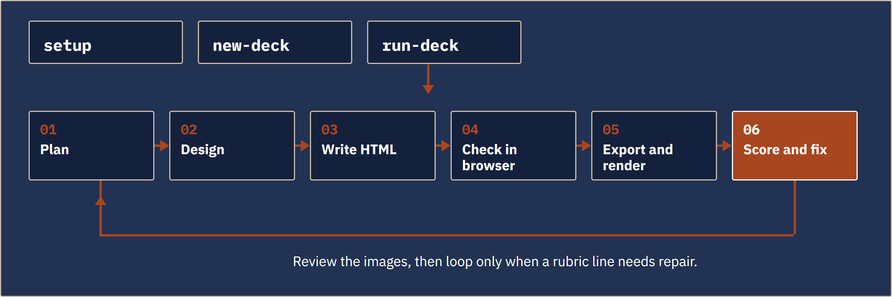

A portable folder that turns plain notes into an editable PowerPoint—with a real quality check.
Editable PowerPoint
Real quality check
Presenter Name
01 / 09
I built this because making a good deck takes hours, while asking an agent for a presentation often produces something generic. This is a short tour of a kit that starts with notes, makes an editable PowerPoint, and checks whether the result actually holds up.
WHY I BUILT IT
A good deck needs three things at once
01
Finished
Match the level of my best hand-made deck.
+
02
Specific
Give each talk its own layout, not one template.
+
03
Portable
Unzip it anywhere and run it.
=
RESULT
Deck kit
Finished, varied, runnable.
Finished + Specific + Portable
02 / 09
The goal was not simply to generate slides. I wanted a result that looked finished, varied its layout to match the talk, and could be run by another person with Node.js, Python, LibreOffice, Chrome or Edge, and the Codex CLI.
THE CONTRACT
Notes in; an editable, reviewable deck out
INPUT
A brief
Topic, audience, time, and images you already have.
OUTPUT
The return package
01Editable PowerPoint
02PNG of every slide
03Browser / PowerPoint side-by-side
04Rubric scores
03 / 09
The input is intentionally simple: a short brief like this one, plus any images someone already has. The output is more than a PowerPoint. It includes the slide PNGs, a browser-versus-PowerPoint comparison for every slide, and the agent's own rubric scores.
HOW IT WORKS
Three commands turn notes into a checked deck

The loop repeats until the build passes and every rubric line scores 4 or 5.
04 / 09
There are only three commands for the person using it: setup once, new-deck to make a deck folder from notes, and run-deck to build. Inside that last command, Codex plans, writes notes, chooses layouts, designs, writes HTML, checks it in a real browser, exports PowerPoint, renders it back, scores the images, and fixes what is wrong.
QUALITY RAILS
Quality is designed into the loop, not added at the end
01
Quality bar
Match the finish level, not the look.
02
Real browser
Fail small, low-contrast, empty, or out-of-margin slides.
03
Guarded kit
The agent may not change the build or checker.
Every deck gets image review, rubric scores, and repair passes.
05 / 09
The quality rails are deliberate. A quality bar establishes the finish level without forcing one template. The checker catches measurable problems such as small text, low contrast, nearly empty cards, and margin violations. And the agent cannot rewrite the tools that judge it; run-deck stops if those files change.
DIAGRAMS
Complex diagrams get their own quality pass
01
Build the diagram on its own
02
Check its text, spacing, and collisions
03
Place the reviewed image in the deck
Diagrams are pictures in PowerPoint, so they are not editable there.
06 / 09
A complex diagram is a weak spot for agents if it is drawn inline from a description. The kit has the agent make the diagram separately, render and inspect it, then place the checked image on the slide. That gives us a better diagram, with a clear trade-off: it is a picture rather than editable PowerPoint shapes.
THE HARD PART
The Windows sandbox was the hard part
22 rounds
One test took about 75 minutes when every fix waited for a full round.
CONSTRAINT
Sandbox
It can write only inside the deck folder, and on Windows it cannot start Chrome.
EACH FIX
Waited for a full round
TOTAL
ABOUT 75 MINUTES
07 / 09
The hard part was not the deck logic. Codex runs in a strict sandbox. On Windows that sandbox could write its edits but could not start Chrome to test them. That meant each fix waited for a complete new round; one test took 22 rounds and about 75 minutes.
THE FIX
The build bridge keeps the sandbox strict and feedback fast
BEFORE
Sandbox only
Writes edits but cannot start Chrome.
AFTER
Build bridge
A request file asks run-deck to build outside the sandbox in about 15 seconds.
GUARD · The request carries no commands.
08 / 09
The bridge keeps the useful security boundary intact. Codex writes a request file; run-deck, outside the sandbox, runs the build in about 15 seconds; Codex reads the result and continues in the same session. The request contains no commands, so the sandbox is not loosened.
THE ASK
Try it on your next talk—and show me the misses
01
Bring a brief
Topic, audience, time, and any images.
02
Keep the PNGs
Look at the slides, not only the PowerPoint.
03
Send the gaps
Tell me where the result falls short.
NEXT · Layout variety still needs proof on more talks.
09 / 09
This works end to end on my PC from a fresh unzip with gpt-5.6-terra. I would like you to try it on a next talk, send me the brief and PNGs, and tell me precisely where the result disappoints. Layout variety still needs proof across more talks.